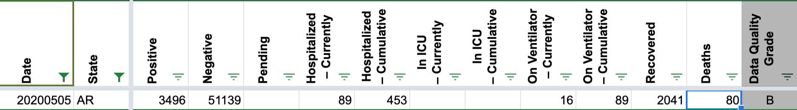
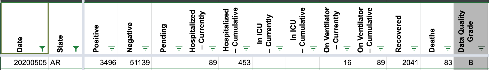

AR - 4/22 & 5/5 have -1 deaths
Issue number 430
scarson opened this issue on May 17, 2020 at 7:00 pm
While potentially accurate to the state record, negative cumulative values cause problems for modeling. We could not verify the source of the death values as the AR “Death Maps” do not appear in the linked screenshots.
{kind=link}
Deaths 4/20 - 42 4/21 - 43 (+1) 4/22 - 42 (-1) 4/23 - 45 … 5/3 - 76 5/4 - 81 (+5) 5/5 - 80 (-1) 5/6 - 85
@thaynedye @dcmoyer
Hi Sam, Thanks for reporting the issue. For 4/22, our screenshots from two separate timestamps show both 42 and 43 deaths reported. We are reporting 42 deaths for 4/22, based on Arkansas’s COVID-19 update on 4/22.
For 5/5, our screenshots show 80, 82 and 83 deaths reported from three separate timestamps dated from 5/5 and 5/6. We will revise from 80 to 83 deaths for 5/5, based on Arkansas’s COVID-19 update on 5/5.
BEFORE: 
AFTER:

Thanks, Camille
Thanks for reporting this issue@scarson
We have secondary screenshots of AR available at http://covid-tracking-project-data.s3-website.us-east-1.amazonaws.com/state_screenshots/AR/ that show deaths reported. We will review them for the dates in question, and make adjustments based on our findings. I will update the ticket when I have more information.